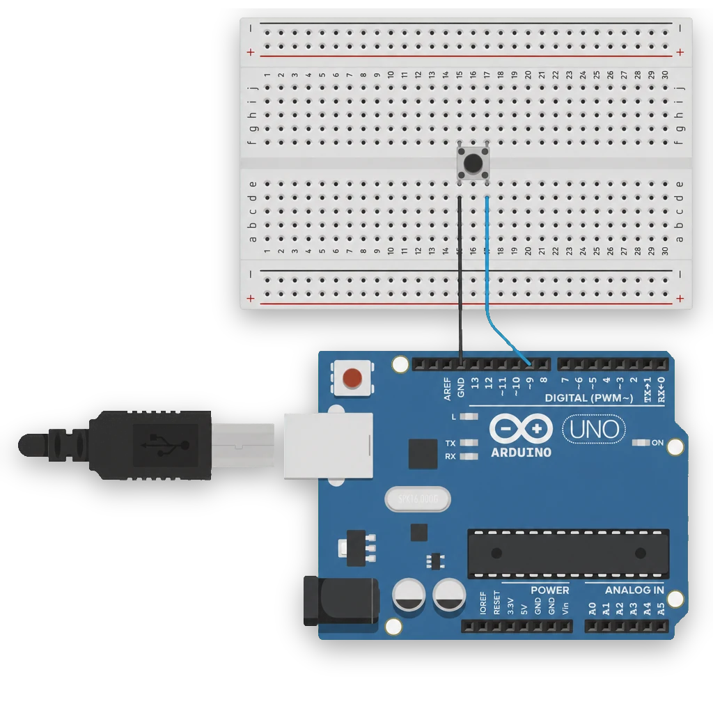
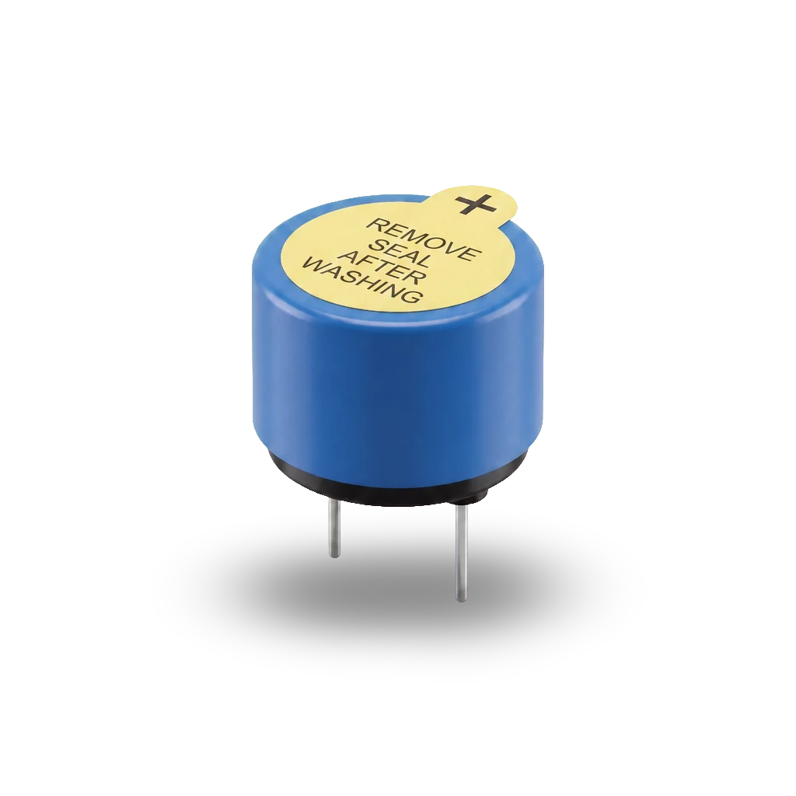
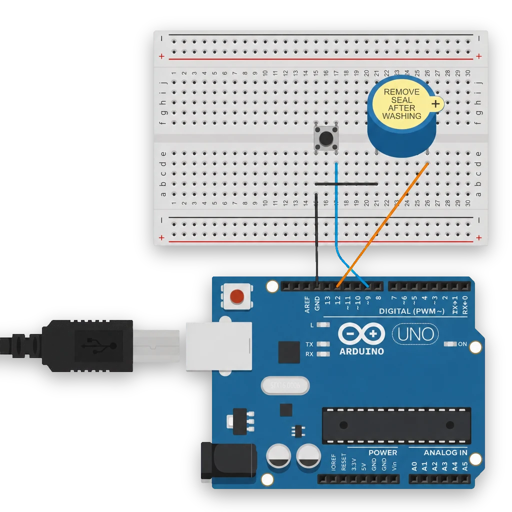

Digital input
Knapp, INPUT_PULLUP, if/else och en buzzer som tjuter på kommando. Arduinon
börjar lyssna på världen och fatta beslut.
Vad du lärde dig
Träff 3 i konkreta byggstenar:
pinMode, annat argument: INPUT_PULLUP.
INPUT_PULLUP bygger in en mjuk dragning till HIGH inuti Arduinon. Tryckt = LOW.
= vs ==
Ett likhetstecken sätter värdet. Två jämför. Glömt det andra = den klassiska nybörjar-buggen.
Knappkretsen
Två ben från knappen — ett till pin 9, ett till GND. Ingen extern pulldown-resistor behövs;
pinMode(knappPin, INPUT_PULLUP) bygger in en mjuk dragning till 5 V inuti Arduinon.
När knappen trycks kortsluts pinnen till GND, läsningen blir LOW.

const int knappPin = 9;
void setup() {
pinMode(knappPin, INPUT_PULLUP);
pinMode(LED_BUILTIN, OUTPUT);
}
void loop() {
if (digitalRead(knappPin) == LOW) {
// knappen tryckt (LOW eftersom INPUT_PULLUP — andra benet drar till GND)
digitalWrite(LED_BUILTIN, HIGH);
} else {
digitalWrite(LED_BUILTIN, LOW);
}
}
Aktiv buzzer — Arduinons röst
En aktiv buzzer behöver ingen frekvens från koden — den tjuter när den får ström.
digitalWrite(buzzerPin, HIGH) = pip, LOW = tyst.


+) → D12, −ben → GND.Larm-mönstret — flank-detektion
Det här mönstret återanvänds direkt i hackathon-projektet. En knapptryckning ska växla larmet — av/på, av/på — inte hålla det av så länge fingret är nere. Lösningen: reagera bara på flanken, ögonblicket när knappen byter läge.
const int knappPin = 9;
const int buzzerPin = 12;
bool larmPaslaget = false;
int lastState = HIGH;
void setup() {
pinMode(knappPin, INPUT_PULLUP);
pinMode(buzzerPin, OUTPUT);
pinMode(LED_BUILTIN, OUTPUT);
}
void loop() {
int state = digitalRead(knappPin);
if (state == LOW && lastState == HIGH) {
// fallande flank → toggla larmet
larmPaslaget = !larmPaslaget;
}
digitalWrite(buzzerPin, larmPaslaget ? HIGH : LOW);
digitalWrite(LED_BUILTIN, larmPaslaget ? HIGH : LOW);
lastState = state;
delay(10); // enkel debounce
}
Tre nyckelrader att förstå:
if (state == LOW && lastState == HIGH)— bara sann i ett enda loop-varv per tryck. Det är flanken.larmPaslaget = !larmPaslaget— bool-toggle. Utropstecknet inverterar:trueblirfalseoch tvärtom.buzzerPin, larmPaslaget ? HIGH : LOW— kort if/else. "OmlarmPaslagetär sant: HIGH. Annars: LOW."
const int = sätts en gång, ändras aldrig (pin-nummer).
int = vanligt heltal som kan ändras (lastState).
bool = sant eller falskt (larmPaslaget). Bilaga A i kompendiet har hela datatyp-tabellen.